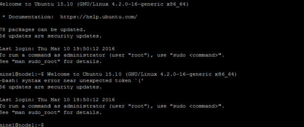
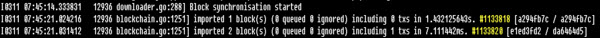
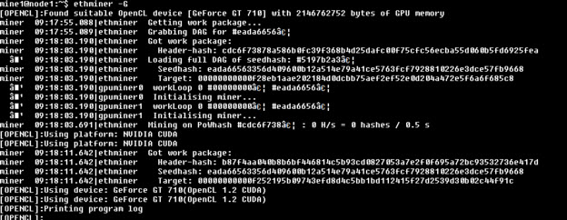
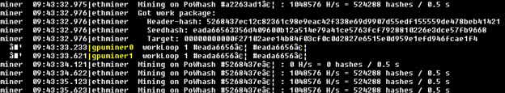

Ethereum Mining Guide - Ubuntu Server 15.10 Bare Metal.
With all the recent announcements of TMX Group having an interest in blockchain and decentralized technologies I decided to explore the world of Ethereum and specifically Ether mining to get a better understanding of the various components. The result was this build guide which I patched together from a number of different sources. Your milage may vary, the official Ethereum forms and Ethereum subreddits have lots of good information. As do the various GitHub Wiki’s.
References
Frontier Guide Details
Geth fast sync and why it's faster.
Building on Ubuntu.
System Setup
- Select Hardware
- In my case we had a few HP Z400 workstations that were being retired. This system has 6 GB RAM and an Intel Xeon Processor 2.66 GHZ, Quad-Core with Hyperthreading. It’s a triple channel system so I have the RAM running at the highest possible speed of 1066.
- This system originally had two 2 x 1GB Quadro 600 cards in it, but that wasn’t enough memory to do GPU mining. So I needed to upgrade, since this was just an experiment I chose the cheapest cards that would work, GeForce 710s. I purchased them for $64 from a local store. These cards fit snuggly into the two PCI Express x16 Gen 2 slots.
- Download Ubuntu Server 64bit
- Don’t panic if you are running an Intel based system but the download has the word AMD in it. It is still for the x86-64 instruction set extension
- Burn it to a CD or USB so you can boot off of it
- Install Ubuntu Server
- Accept all the default installation values and made one logical volume
- Add OpenSSH server
- At this point you should have Ubuntu properly installed be ready to download the required software

- Install Ethereum
- You need to install some basic dependencies first. Then add the ethereum repository, update your list of repositories, then go ahead and install ethereum.
sudo apt-get install software-properties-common
sudo add-apt-repository ppa:ethereum/ethereum
sudo apt-get update
sudo apt-get install ethereum
- Verify Install
- You can verify the install by using “Geth”. Geth is the command line interface for an Ethereum node.
geth version
- Create Account
- You need an account on the network to participate
geth account new- It will ask you the secure your account with a password. Use and strong password and be sure to remember it.
- It will then display your address on the network.
- Downloading the blockchain
- Before mining you need to download the blockchain
geth --fast
- This will start up your node and begin to download the block chain. The --fast switch speeds up this process with can be lengthy. Instead of processing the entire block-chain one link at a time, and replay all transactions that ever happened in history, fast syncing downloads the transaction receipts along the blocks, and pulls an entire recent state database. You will notice the block chain number start to increment up as you go. This process can take anywhere from 20mins to hours depending on your network setup.

- You can check how far you are along the blockchain by checking this website. It has all sorts of interesting information but you are interested in Best Block #.
- If you are having trouble connecting make sure UpNp is enabled on your router. Geth needs to open up some ports to communicate to the rest of the network.
- When you have the entire blockchain downloaded a message will appear and say Blockchain synchronized
- Install the C++ version of Ethereum
- You need the C++ Version of Ethereum to get the ethminer application. Ethminer is the stand alone mining application. Geth does has GPU mining but it doesn’t appear to be fully supported at this time. Most guides seem to take this approach.
- Add the additional repositories, update the repositories and install the C++ version
sudo add-apt-repository ppa:ethereum/ethereum-qt
sudo add-apt-repository ppa:ethereum/ethereum-dev
sudo apt-get update
sudo apt-get install cpp-ethereum
- Check the version of ethermine
- Now that you have the C++ version of Ethereum installed you will have access to a set of new tools.
- Check your version of ethminer
ethminer -v
- Download the CUDA (openCL) drivers
- Since I installed GeForce 710s into this system. I need to download and installed the Nvidia CUDA drivers. That will give the system openCL support. These instructions are for Nvidia chipsets only. AMD/ATI openCl is a different process
- Go to the Nvidia website to find the most up to date drivers
- Download them onto your mining server.
wget http://developer.download.nvidia.com/compute/cuda/repos/ubuntu1504/x86_64/cuda-repo-ubuntu1504_7.5-18_amd64.deb
sudo dpkg -i cuda-repo-ubuntu1504_7.5-18_amd64.deb
sudo apt-get update
sudo apt-get install cuda
- The CUDA toolkit is a large install includes a bunch of thing that are probably not needed but GPU performance is key so I want to ensure I have the latest and greatest drivers. You could just download the drivers stand alone from Nvidia.
- After the install is done, reboot to get that drivers properly loaded.
- Verify that ethemine can see the video cards properly
ethminer --list-devices
Congrats! You now have everything installed and you are ready to start mining.
Mining
- In one session startup geth in rpc mode with console so you can see what is happening
mine1@node1:~$ geth --rpc console
- Starting it in RPC mode allows ethminer to connect to geth
- In another session startup ethminer
ehtminer -G
- The -G tells it to mine using GPU. After it creates the DAG file it should go to work mining.

- As you are mining along it should look something like this. You can see it is using both GPUs in the system.

- Check Ether balance
- Use the geth console to see if you have successfully mined any ether
web3.fromWei(eth.getBalance(eth.coinbase), "ether")
- Ethereum Mining Calculator
- Use the Ethereum mining calculator to estimate how long it will take you to find one block
- You need to convert you harsh rate per second to MH/S second
Next steps
I would like to work on startup and shutdown scripts for the various applications as well as consider joining a mining pool.